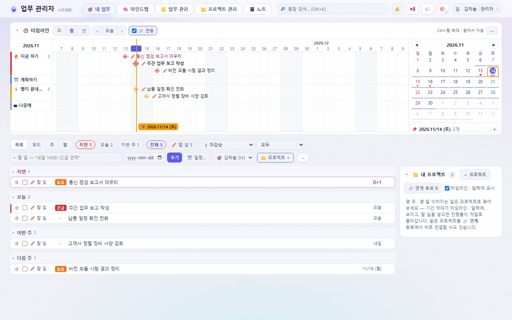
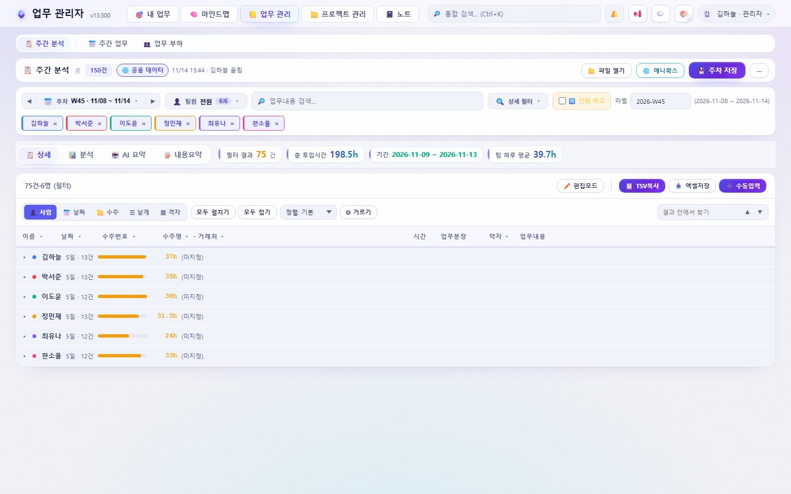
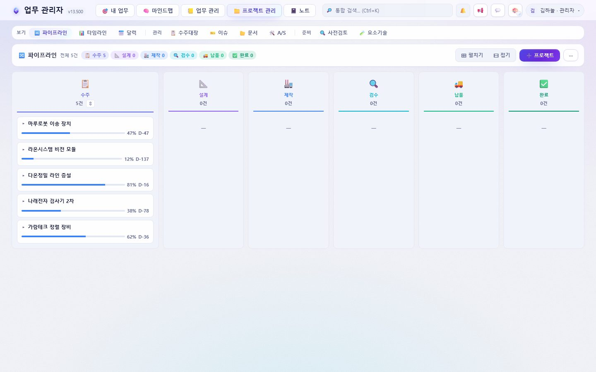
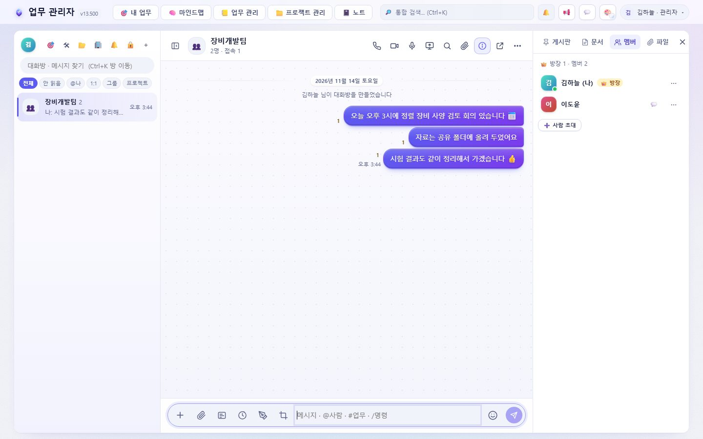
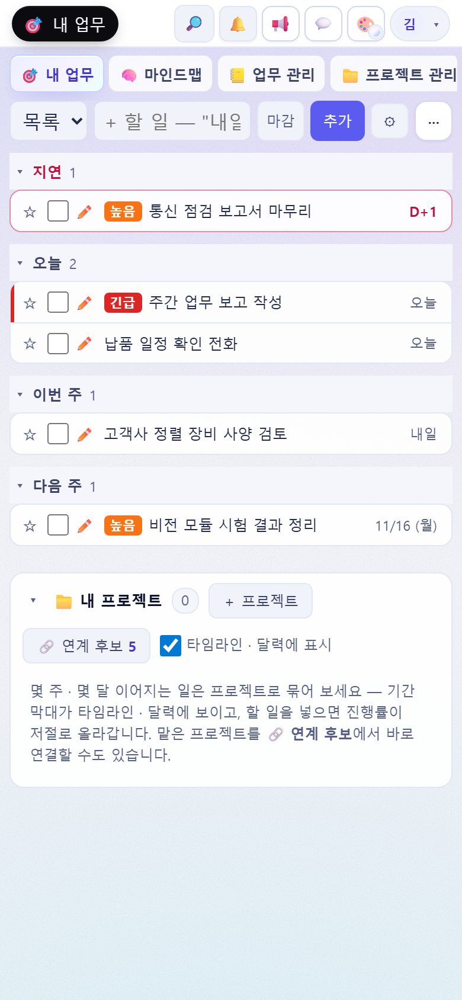
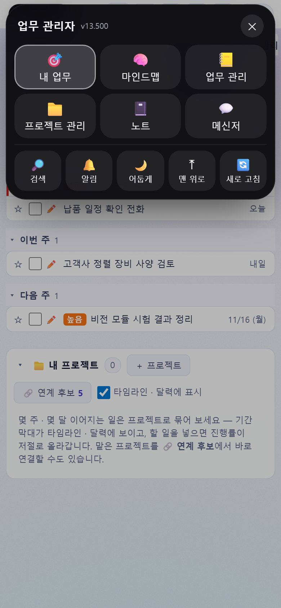
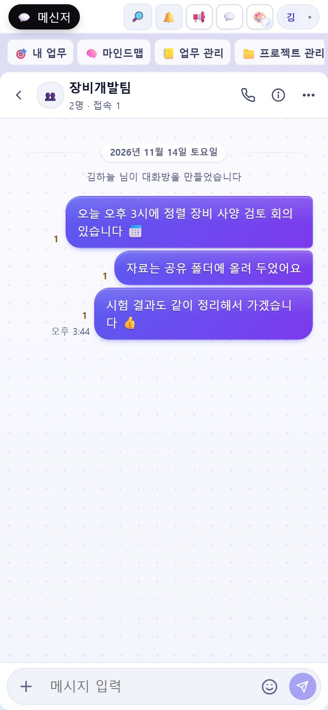

할 일 · 업무일지 · 프로젝트 · 메신저를
한곳에서
PC 앱, 휴대폰 앱, 웹 브라우저 어디서나 같은 화면으로 씁니다. 새 버전이 나오면 알려 주고, 새로 고치면 바로 적용됩니다.
화면 둘러보기
아래 화면은 모두 가상의 사람 · 회사 · 업무로 채운 예시입니다.




휴대폰
머리 줄 왼쪽의 검은 캡슐(아일랜드)을 누르면 빠른 메뉴가 펼쳐집니다.



설치하기
한 번만 설치하면 그 뒤로는 저절로 새 버전으로 바뀝니다.
🖥 PC 앱 (Windows)
- 위의 PC 앱 내려받기를 눌러
WorkManager-Setup-x.y.z.exe를 받습니다. - 받은 파일을 실행합니다. "Windows의 PC 보호" 창이 뜨면 추가 정보 → 실행을 누릅니다.
- 설치가 끝나면 업무 관리자가 열립니다. 회사 계정으로 로그인합니다.
- 창을 닫아도 오른쪽 아래 트레이에서 계속 알림을 받습니다.
📱 휴대폰 (아이폰 · 안드로이드)
- 아이폰: Safari로 업무 관리자 주소를 열고 공유 → 홈 화면에 추가를 누릅니다. (iOS 16.4 이상)
- 안드로이드: Chrome으로 열고 ⋮ → 앱 설치(또는 홈 화면에 추가)를 누릅니다.
- 홈 화면의 아이콘으로 열어 로그인한 뒤, 🔔 알림 켜기를 눌러 두면 앱을 닫아도 메시지와 새 버전 알림이 옵니다.
간단 사용 설명서
처음 쓰는 분이 10분 안에 익힐 수 있는 순서입니다.
- 로그인회사에서 받은 이메일과 비밀번호로 들어갑니다. 구글 계정 로그인을 켜 둔 회사는 구글로도 됩니다.
- 🎯 내 업무 — 할 일 넣기입력 칸에 "내일 14:00 !긴급 견적"처럼 쓰면 마감 · 시간 · 중요도가 함께 들어갑니다. 할 일을 누르면 상세 창에서 메모 · 하위 항목 · 반복을 정합니다. 끌어서 달력의 다른 날로 옮길 수 있습니다.
- 📒 업무 관리 — 업무일지엑셀 업무일지를 파일 열기로 올리면 팀 전체가 같은 데이터를 봅니다. 주차 · 팀원 · 사업부로 골라 시간과 내용을 분석합니다.
- 📒 업무 관리 — 주간 업무 보고지난주 실적과 이번 주 계획을 쓰면 업무일지에서 빠진 일을 찾아 줍니다. 처리할 일은 휴지통(처리 대기)에 두었다가 다시 꺼내 씁니다. 미리보기에서 보고용으로 인쇄 · 복사합니다.
- 📁 프로젝트 관리수주 → 설계 → 제작 → 검수 → 납품 → 완료 단계로 진행률을 관리합니다. 프로젝트를 누르면 일정 · 이슈 · 문서 · 회의록을 한 화면에서 봅니다.
- 💬 메신저1:1 · 그룹 · 프로젝트 방에서 대화하고 파일 · 사진을 보냅니다. 사진을 누르면 칠판에서 표시를 그려 함께 볼 수 있습니다.
- 🔎 통합 검색맨 위 검색 칸(Ctrl+K)에서 프로젝트 · 이슈 · 회의 · 할 일을 한꺼번에 찾습니다. 휴대폰은 🔎를 누르면 검색 칸이 펼쳐집니다.
- ⬆ 새 버전새 버전이 나오면 화면 위에 알림 띠가 뜹니다. 휴대폰은 알림으로, PC 앱은 윈도우 알림으로 옵니다. 지금 새로 고침(또는 F5)을 누르면 PC 앱까지 함께 업데이트됩니다.
📱 휴대폰 팁
- 왼쪽 위 검은 캡슐 = 빠른 메뉴 (화면 이동 · 검색 · 알림 · 밝게/어둡게 · 맨 위로 · 새로 고침)
- 캡슐에 💬 숫자가 보이면 안 읽은 메시지, ⬆ 가 보이면 새 버전이 있다는 뜻입니다.
- 🎨 화면 설정에서 테마를 바꾸면 맨 위 상태 표시줄 색도 따라 바뀝니다.
⌨ PC 단축키
- Ctrl+K 통합 검색
- F5 · Ctrl+R 새로 고침 (받아 둔 PC 앱 업데이트도 설치)
- Ctrl+Alt+T 항상 위에 두기 (PC 앱)
- Alt+W 글쓰기 · Alt+N 낙서장